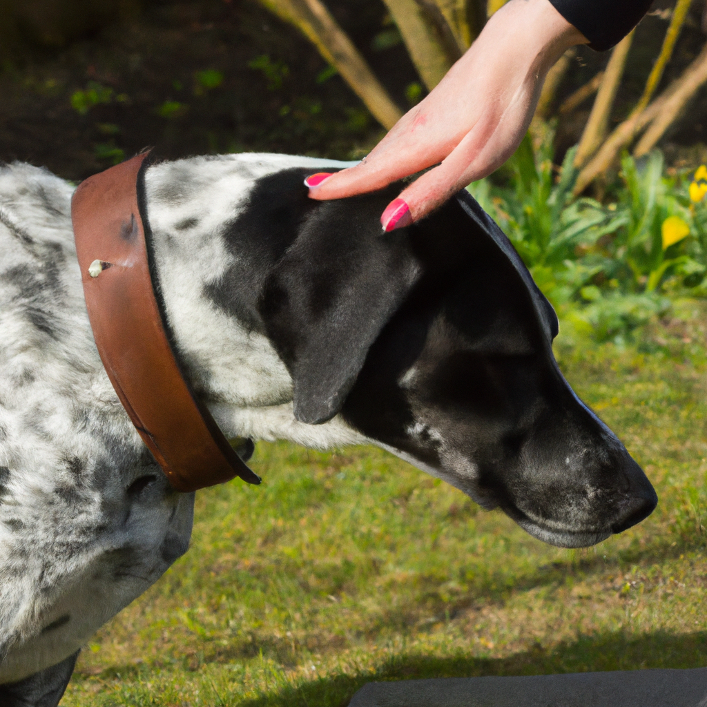

How To Teach Your Dog To Bow
If you’ve ever wanted to teach your pup a fun trick, teaching them how to bow is an easy and fun way to do it! Bowing is a great way to show your dog’s obedience, and it can also be used to show your pup some love and affection. Here’s how to teach your pup how to bow.
Start by standing in front of your pup and getting them to sit. Give them a treat, and then move your hand down towards the floor and say the command ‘bow’. As you do this, gently press down on your pup’s chest and hold it there for a few seconds. If they don’t bow down, you can give them a treat and try again.
Once your pup starts to bow down, give them a treat and lots of praise. Repeat this process until your pup bows down without you needing to press down on their chest.
Once your pup has learned the command, you can use it to show your pup affection. Whenever you want to give your pup a hug or kiss, just say ‘bow’ and they’ll be more than happy to oblige.
Teaching your pup how to bow is a great way to show your pup some love and appreciation. It’s also a fun trick that your pup will love to show off!